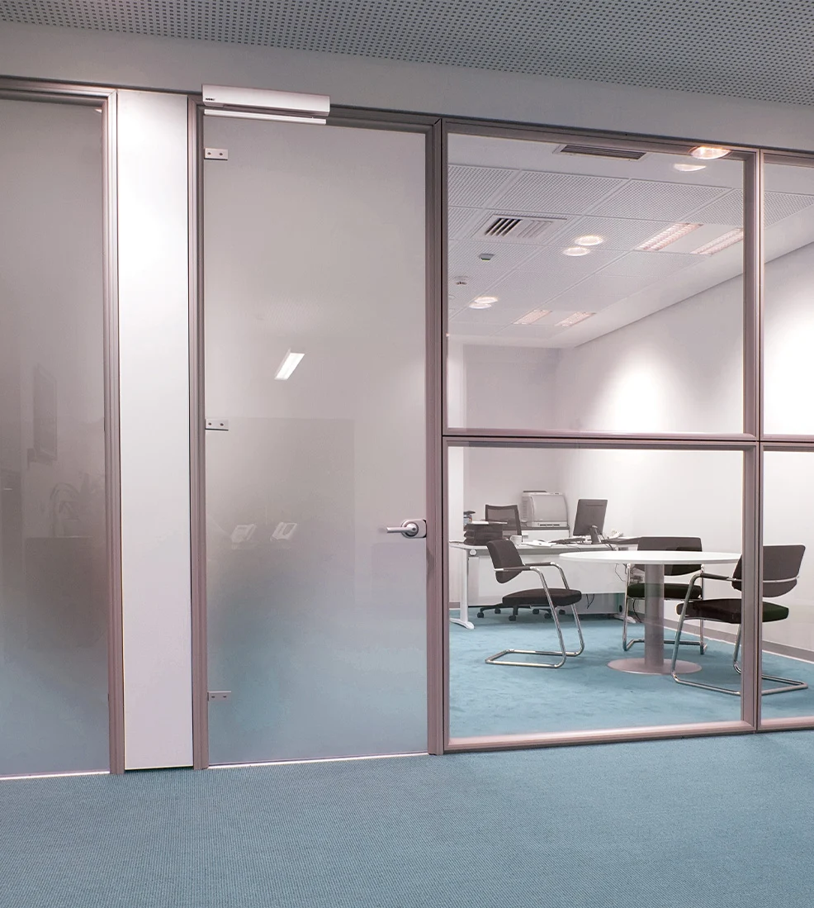
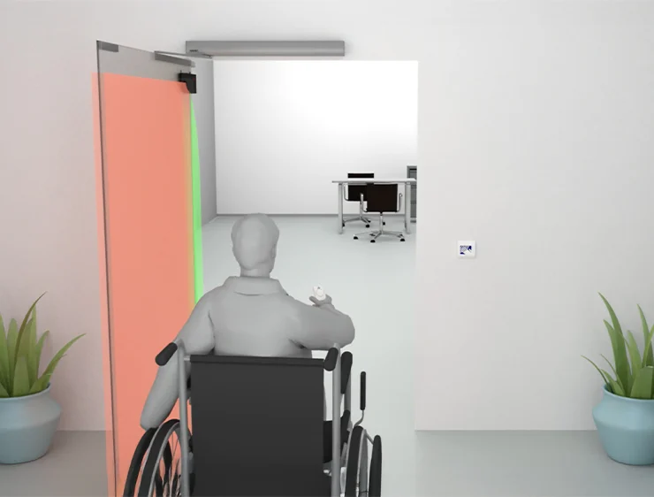
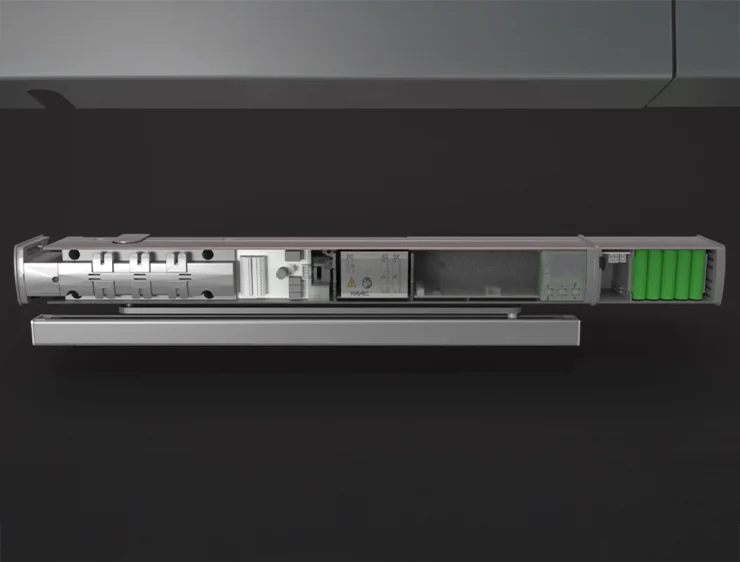

Automatismo para hojas batientes con peso hasta 100 kg a 24V.
La automatización A951 permite controlar la apertura y el cierre de la puerta interior en absoluta silenciosidad y fluidez de funcionamiento.
La cubierta protectora está fabricada en aluminio extruido anodizado.
Realizado en conformidad con la nueva Norma Europea EN 16005; la velocidad y la fuerza se programan en función de las dimensiones de la puerta.
Gracias a la cuidadosa selección de componentes mecánicos y electrónicos, la automatización A951 es capaz de mover hojas de 700 a 1100 mm con un peso de 100 kg en servicio continuo, garantizando en cualquier momento la absoluta seguridad de funcionamiento.


Con A951 es posible abrir las puertas simplemente a través de un pulsador, un sensor o un control remoto. Gracias a la función PUSH&GO basta un toque en la puerta y esta se abrirá automáticamente.

Gracias a la cuidadosa elección de componentes mecánicos y electrónicos, nuestra automatización A951 es capaz de mover en absoluto silencio hojas con peso de 100 kg y anchura de 1100 mm en servicio continuo, permitiendo un notable ahorro energético tanto en modo stand-by como en funcionamiento.
Información técnica